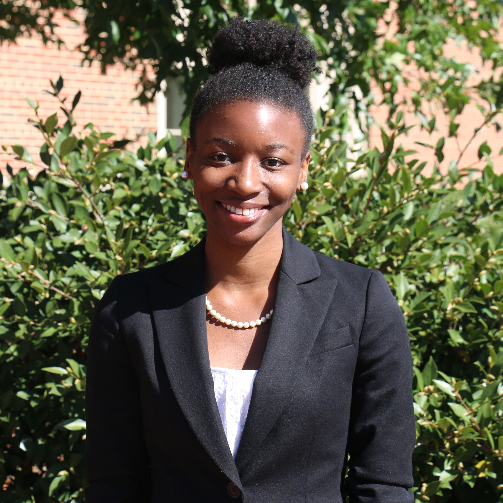

Anastazja Harris
My goal is to develop the critical thinking skills of others in a way that allows them to think more deeply about the communicative choices they make in their everyday lives. I hope to educate organizations on how their actions "speak" to their members.
What I do
- Current doctoral student in Communication Studies, with a focus on Organizational Communication and Technology
- Teach communication courses to university students
- Provide advice and encouragement to university students from underrepresented groups
- Conduct communication research focused on the storytelling, impression management, and cultural environment of organizations

About Me
Connect
LinkedIn